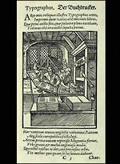

|
Woodcut Showing A Printing Press After the introduction of block printing from China, printing was reinvented in Europe in the fifteenth century, when movable type and the printing press were introduced by Johannes Gutenberg. Movable type meant that each letter could be placed individually into a frame to print a particular page; the letters could then be changed individually to create the text for the next page. Therefore one whole block of wood was not needed for each page of a book. The printing press was a machine for pressing the inked letters onto a page effectively. The first book to be made using the printing press was a Latin Bible. The books from the printing press were much cheaper to buy than those that were handwritten and increasingly printed books were written in native languages so that people who had not learnt Latin or Greek could also read books. |